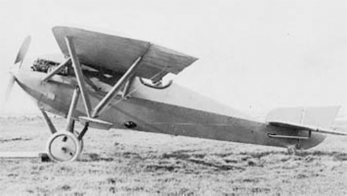

Sturtevant B

- Разработчик: Sturtevant
- Страна: США
- Первый полет: 1917
- Тип: Истребитель
В 1916 году американский конструктор Гровер С Лоенинг (Grover С Loening), работавший на фирме Sturtevant Aeroplane
Company в Бостоне, закончил проект легкого скоростного самолета. Командование Army Air Service решило заключить
контракт на производство нескольких экземпляров самолета, получившего наименование Sturtevant B1 Speed Scout, для
сравнительных испытаний в роли разведывательного самолета.
Кроме того в конце 1916 года были заказаны четыре самолета в варианте одноместного истребителя, получившие обозначение
Sturtevant B2. Этот самолет представлял собой одноместный полутороплан смешенной конструкции, оснащенный восьмицилиндровым
двигателем водяного охлаждения Sturtevant A5 мощностью 140 л.с.
Первый экземпляр самолета поднялся в воздух 20 марта 1917 года. В ходе первого же полета пилот потерял управления рулем высоты
и практически неуправляемы самолет врезался в дерево. Этот несчастный случай заставил Army Air Service аннулировтаь контракт
на производство оставшихся трех самолетов.
| Летно технические характеристики | |
|---|---|
| Модификация | Sturtevant B2 |
| Размах крыла, м | 9.22 |
| Длина, м | 7.58 |
| Высота, м | 2.64 |
| Масса, кг | |
| - пустого самолета | |
| - нормальная взлетная | |
| Тип двигателя | 1 ПД Sturtevant A5 |
| Мощность, л.с. | 1 х 140 |
| Максимальная скорость , км/ч | |
| Крейсерская скорость , км/ч | |
| Продолжительность полета, ч.мин | |
| Максимальная скороподъемность, м/мин | |
| Практический потолок, м | |
| Экипаж, чел | 1 |
| Вооружение: | один 7,62 мм пулемет |